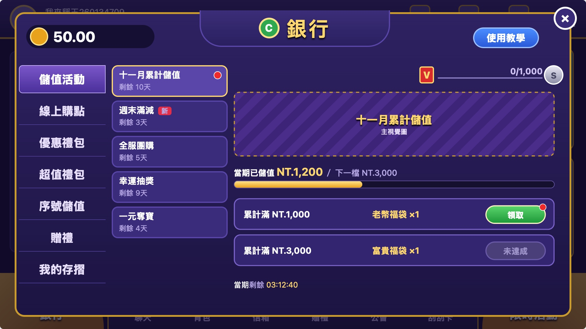
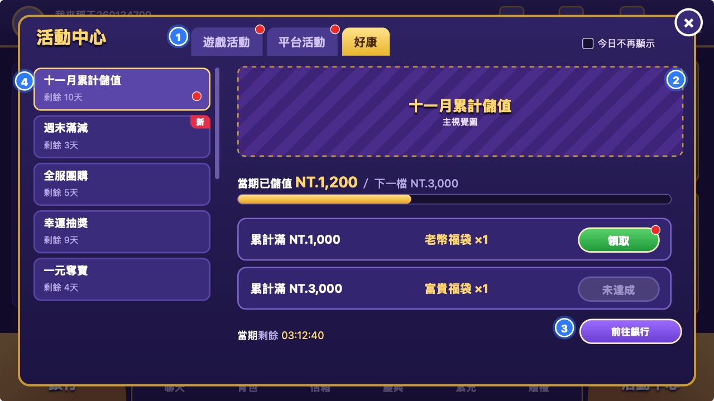

目标按需求原文：运营想上活动时（如周五做一个储值活动），在后台复制上期、改时间和档位、审核后就上线，不再每次排开发。近一年 148 个储值、商城类开发需求里，有 52 个是同样的东西重复开发。
选工具 → 填规则 → 对象与时间 → 成本上限 → 素材 → 另一人审核 → 到点上线；可复制上期；每个活动一张数据页
左下银行管花钱；右下限时活动管玩，分游戏、平台；公告只放消息
礼包、累充、满减、折扣、抽奖、团购、一元夺宝；第一批前四个
系统按规则定活动放哪：要先付费的进银行，指定游戏的进游戏活动，其余进平台活动
合并成一个活动入口
好康不再放活动，左下给银行；要先储值才能参加的活动跟银行走
「好康改为金流／商城」是这个意思吗？银行能加一个「储值活动」页签吗？
第一批做后台、入口、四个储值工具
节庆专题页和抽奖第二批，赶在明年庆典季前；团购、一元夺宝最后
1/21 是开发完成还是上线？节庆、一元夺宝要本期就有吗？
满减、折扣做成多送，不直接减价
团购做全服阶梯返利；一元夺宝的券只用老币买或储值送
这三个做法符合你写这几个工具时的预期吗？
从两个入口的定位和价值看：好康作为活动入口已经没有自己的价值，它最值钱的是大厅左下的位置，这个位置给付费入口更能带业绩。
| 入口 | 原定位 | 现在实际放的 | 还剩的独有价值 |
|---|---|---|---|
| 好康活动大厅左下大按钮 | 新手的活动聚合入口，「承載部分活動和功能」 | 排行榜、外赠、庆典、抽奖大厅、黄金百万、储值优惠；产品自评「淪為活動展示」 | 大厅最显眼的位置；大图展示 |
| 限时活动大厅右下大按钮 | 老玩家的快捷入口：图标、剩余天数、红点 | 月月抽、发财金、新手挑战、通行证、抽奖大厅、排行榜等；新手类活动已并进它的列表 | 当期活动一览和到期提醒 |
结果：两个入口争同一批活动，玩家按「新手／老玩家」分不出该去哪；每个活动要在两套后台各配一次；「祈福财神庙」同时挂在 7 处。


两种做法后台、工具、规则完全一样，只差客户端放哪，不卡后台开发；最晚需求评审（12/11 前）定。不选「保留两个活动入口」：银行仍是底栏小按钮，重叠问题也没解决。
上线风险：习惯点左下找活动的玩家会进到银行。建议改版后头几次打开银行时提示「活动移到右下限时活动」。
开发期按 12/11 至 1/21 算约 6 周，研发还没估时，七个工具和节庆装不下，只能分批。排法按「哪类重复开发最多、哪类直接带储值」。
| 批次 | 做什么 | 解决什么 | 为什么排这里 |
|---|---|---|---|
| 第一批1/21 前 | 运营后台（审核、数据页）；三个入口改版；礼包、累充、满减、折扣 | 礼包每出一包做一页（重复开发 12 个）；日常储值优惠每轮重做；新活动挂不上入口 | 储值活动每周都能用、直接带储值；节庆里的储值优惠也靠这几个工具，第一批就能配 |
| 第二批明年 8 月前 | 庆典专题页（一页汇总本期活动）、抽奖工具；现有玩法接入新入口 | 两次庆典把活动大页、抽奖大厅、储值优惠页等 6 块各做一遍（重复开发 22 个） | 专题页要汇总的是用工具配出的活动，得先有第一批。今年两次庆典在 8/17、9/10 建单，晚于明年 8 月中就会再做一遍 |
| 最后 | 团购、一元夺宝 | 新玩法，过去一年没有对应需求 | 价值未验证；一元夺宝要先过法务 |
本期解决不了的：新增「至尊卡」这类改动要各活动各改一遍（18 个），落在扭蛋机、转盘等玩法自己的后台；人数活动、大厅换装；全新玩法。春节：2027 年春节（2/6）离 1/21 只有 16 天，春节活动仍按现在的方式开发，会和本项目抢研发。推断
需求写了满减、累充、团购、折扣、礼包、抽奖、一元夺宝。下面三处我们的做法和字面意思不一样，各有原因。
| 工具 | 我们的做法 | 原因 | 例子 |
|---|---|---|---|
| 满减、折扣 | 做成「多送」，不直接减价。满减＝单笔满额加赠；折扣＝同价加赠，商品上显示「加赠 X%」 | App 内购的价格档固定，活动不能临时改实付金额；三款竞品也都是多送（「UP 20%」「超值加贈 566%」） | 单笔满 1,000 加赠 10%；500 档加赠 30% |
| 团购 | 全服阶梯返利：全服一起买同一商品，人数越多每人返越多 | 邀请好友拼团属于拉新玩法，另立需求 | 100 人返 5%，300 人返 10% |
| 一元夺宝 | 每期一个大奖，卖券凑满开奖；券只能用老币买或储值赠送 | 台币直接买券、抽实物奖，接近博彩，合规风险高；上线前法务确认 | 原文两例都能配：全服本期储值满 10 万台币开奖；售券满 1.1 万开奖、奖品价值 1 万 |
官网渠道能不能真打折要问金流；即使能，同一个活动在 App 和官网就成了两套规则，不建议。
依据：重复开发数据来自 Jira 开发需求单（2025-11-01 至 2026-10-26 建单），按标题归类后逐个核对子任务，52 个是下限、按需求个数；入口现状来自产品 idea 页、2025-12 好康改版草案和客户端截图；竞品来自金好运、星城、豪神各一个新账号的录屏。完整界面和规则见《需求评审材料》。